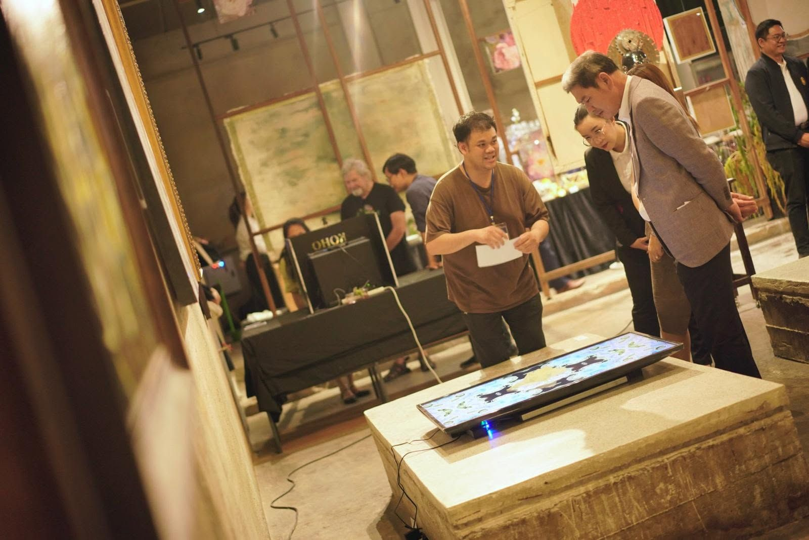
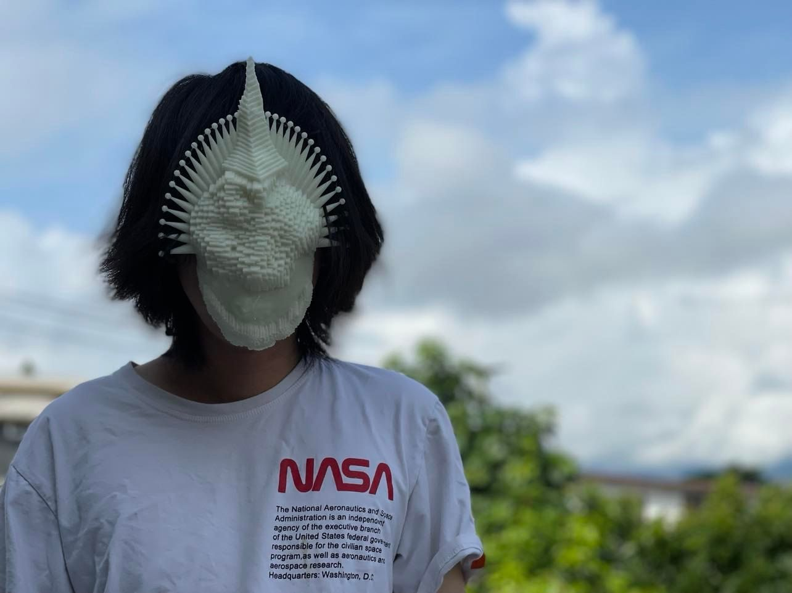

We create the cyber-animism data-generated mask for the mask dance to let the former be ‘the medium’ between nature and humans.
How can we include nature in our decision-making process designed for only humans? Our democratic experiment is to find the way we can include those being in the human decision-making process through art. How can we go beyond ‘Human’ to understand nature?
Thanks to our ancestors who might explore this idea a long time ago through animism.
'Medium' is the animistic belief of a human whose body was taken over by a ghost, spirit, god, or other entity. This belief is common in Thailand and throughout Southeast Asian culture. There is still a number of rituals based on this belief nowadays.
‘Can the Medium be the way we communicate will nature?’
Mask dance is a form of artistic performance in different cultures globally. The performers must interpret their masks and generate movement. On the other hand, the mask can possess the performer and turn the performer into the Medium of such being.
This project is the prototype of this cyber-animism system to enable humans to expand the stakeholder of any decision-making. Data was gathered from an open data platform in our city. Then map the data with human sense (e.g. air visibility is mapped to optical sense) to determine the area on the mask. Then, generated pattern through the quantity of each parameter and 3D-printed the mask for the performer. At glance, the mask was visualized the data from the air quality in Chiang Mai, Thailand (my hometown), one of the most polluted cities during the burning season. However, the way to interpret more data from the nature is meant to explore during the residency periods.

Photos: Kosmos 2026